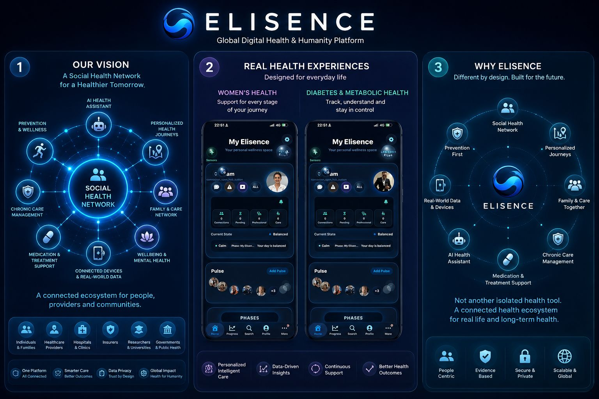
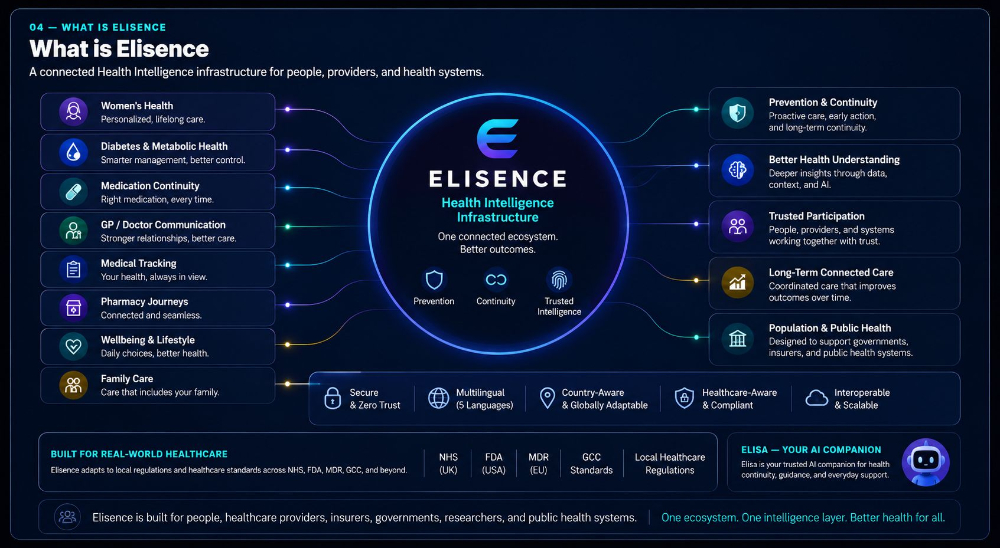
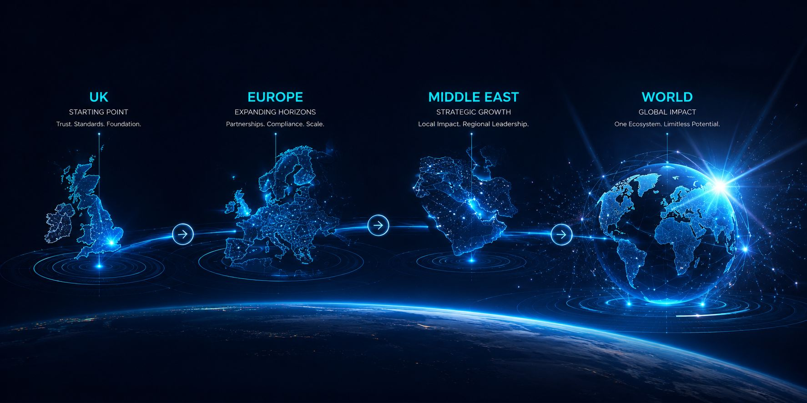
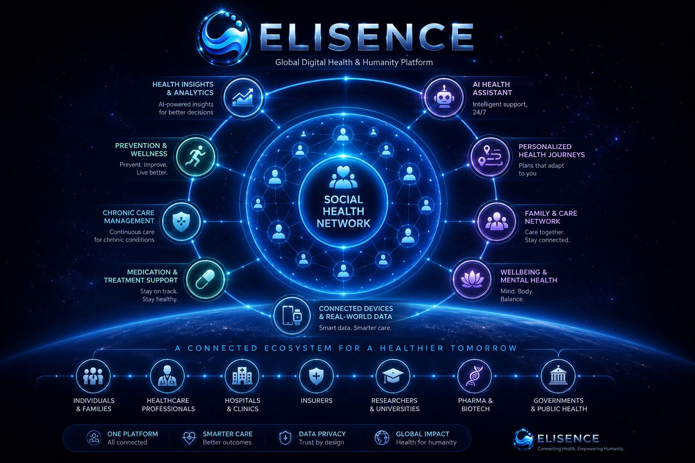

Healthcare pressure
Chronic conditions are rising, populations are ageing, workforce strain is increasing, healthcare costs are growing, and systems are under pressure to move from reactive care toward prevention and continuity.

ELISENCE
Human-Centred Connected Health Ecosystem
Prevention • Continuity • Trusted Health Intelligence
Saami Salami
Founder & CEO
Web Summit Lisbon 2026
02 — Healthcare Feels Fragmented
Fragmentation, rising costs, and growing system pressure
Healthcare today often feels fragmented, reactive, expensive, and difficult to navigate — both for people and healthcare systems.
Healthcare should feel more connected, understandable, preventative, continuous, and human.
03 — WHY NOW
Healthcare is reaching a turning point.
Chronic conditions are rising, populations are ageing, workforce strain is increasing, healthcare costs are growing, and systems are under pressure to move from reactive care toward prevention and continuity.
People are increasingly expected to manage medication, diabetes, prevention, chronic conditions, appointments, wellbeing, family care, weight and metabolic journeys, and everyday healthcare decisions themselves — but the experience still feels fragmented.
People now expect simple, connected, intelligent experiences in every part of life, while healthcare still often feels fragmented, disconnected, and difficult to navigate.
Better digital infrastructure, healthcare communication, medical intelligence, trusted interaction, prediction, connected tracking, everyday health signals, sensor-aware experiences, and AI-assisted workflows now make long-term continuity more realistic.
We believe Elisence is arriving at the moment healthcare pressure, human behaviour, technology maturity, and the need for trust are finally converging.
One connected health ecosystem for people and healthcare systems.

Elisence is a human-centred, globally adaptable health ecosystem designed to make healthcare feel more connected, understandable, trusted, and easier to navigate over time.
One connected ecosystem designed to help healthcare feel more human, preventative, trusted, intelligent, and continuous.
Most digital health tools solve one problem at a time.
Health becomes scattered across disconnected tools, subscriptions, fragmented data, repeated friction, and isolated moments of care — often with little continuity or long-term understanding.
Rather than building another isolated health app, Elisence is designed as a connected ecosystem where prevention, metabolic and blood understanding, medical tracking, medication continuity, women’s health, pharmacy, GP and doctor communication, body understanding, intelligent support, sensor-aware experiences, social health participation, and trusted health continuity work together rather than separately.
Elisence is designed around continuity — helping healthcare feel connected over time rather than episodic, fragmented, and reactive.
Rather than building another isolated health app, Elisence is designed as a connected ecosystem where prevention, metabolic and blood understanding, medical tracking, medication continuity, women’s health, pharmacy, GP and doctor communication, body understanding, intelligent support, sensor-aware experiences, social health participation, and trusted health continuity work together rather than separately.
Built with modular architecture, multilingual experiences, healthcare-aware trust, and country-adaptable thinking, Elisence is designed to support people and healthcare systems across different healthcare realities rather than assuming one model fits everyone.
Elisence is designed with regional healthcare expectations in mind — including NHS-style safety thinking, UK and EU privacy expectations, FDA-inspired safety boundaries, and Gulf healthcare realities — while adapting responsibly to trust, governance, language, and healthcare context over time.
Not another health app — a connected ecosystem designed to reduce fragmentation and help healthcare stay meaningfully connected over time.
Trust is not paperwork. Trust is architecture.
Connected health experiences — not disconnected tools.
One connected ecosystem where prevention, care, intelligence, communication, participation, and continuity reinforce one another over time.
Built medical-aware, governed non-medical by default.
Trust is not paperwork. Trust is architecture.
Trust-led healthcare value creation.
One ecosystem. Multiple value layers. Trust before monetisation.

Global ambition. Local trust.
Global problem. Local trust. Responsible scale.
A founder story rooted in healthcare continuity
Elisence began with a simple but deeply personal question:
Why does healthcare so often feel fragmented, stressful, confusing, and difficult to navigate — especially when people are already vulnerable?
Through my background across engineering, legal, business, and care services, including home and domiciliary care, I repeatedly saw the same pattern:
People are increasingly expected to manage medication, prevention, chronic conditions, appointments, wellbeing, family care, and everyday healthcare decisions across systems that rarely feel connected, human, or easy to navigate.
Over time, I became increasingly interested in whether better systems thinking, thoughtful design, trusted health intelligence, and more connected experiences could help healthcare feel calmer, safer, more supportive, and easier to understand.
Elisence is also deeply personal to me.
It is inspired by and named after my daughter, Elisa — reflecting a long-term hope to help build a future where healthcare feels more connected, more trusted, more human, and easier to navigate for the people we care about.
For me, Elisence is not simply a company or a product.
It is a long-term mission to reduce fragmentation, strengthen continuity, and help healthcare feel more human, supportive, and connected over time.
Connected, preventative, supportive, and continuously human.

We believe healthcare should not only exist when people are ill.
Today, many health experiences are fragmented, episodic, stressful, and reactive — moments of appointments, medication, monitoring, or illness that often disappear once the immediate need ends.
People are increasingly expected to manage prevention, medication, wellbeing, chronic conditions, appointments, family care, health understanding, and everyday health decisions across disconnected systems that rarely feel human, connected, or supportive.
We believe healthcare should feel continuous.
A future where prevention matters more, continuity becomes normal, trusted health participation grows, and people remain connected to health before, during, and after illness.
A future where healthcare feels calmer, more supportive, socially connected, intelligent, preventative, and more human.
Elisence is designed as a connected health relationship ecosystem where prevention, trusted health intelligence, social health continuity, medication support, body understanding, wellbeing, women’s health, metabolic health, communication, and continuity work together rather than separately.
At the centre is Elisa — a trusted continuity companion designed to help people stay connected to healthier routines, trusted participation, wellbeing, reminders, support, communication, and everyday health continuity.
Rather than advertising-driven attention loops, Elisence is designed around healthy engagement, trust, meaningful participation, and supportive long-term health relationships.
Build responsibly. Earn trust locally. Scale globally.
Help healthcare move from fragmented and reactive → toward connected, preventative, supportive, and continuously human experiences.
Most digital health systems become useful during moments of illness.
Elisence is designed to stay valuable before, during, and after illness.
12 — Ask / Next Step
Build responsibly. Validate meaningfully. Scale with trust.
Elisence is moving from strong product foundation toward responsible validation, institutional partnerships, and scalable real-world deployment.
Global ambition • Local trust • Responsible scale
Pilot • Partnership • Strategic Introduction • Investment
Let’s explore one concrete next step.
If you believe healthcare should feel more connected, trusted, preventative, and human — we welcome a focused conversation.